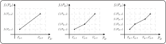
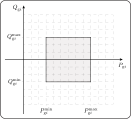
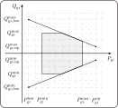

AC Optimal Power Flow
To begin, the PowerSystem composite type must be provided to JuliaGrid through the use of the powerSystem function, as illustrated by the following example:
using JuMP, Ipopt
system = powerSystem()
@bus(minMagnitude = 0.95, maxMagnitude = 1.05)
addBus!(system; label = 1, type = 3, active = 0.1, angle = -0.1)
addBus!(system; label = 2, reactive = 0.01, magnitude = 1.1)
@branch(minDiffAngle = -pi, maxDiffAngle = pi, reactance = 0.5, type = 2)
addBranch!(system; label = 1, from = 1, to = 2, longTerm = 0.15)
@generator(maxActive = 0.5, minReactive = -0.1, maxReactive = 0.1)
addGenerator!(system; label = 1, bus = 1, active = 0.4, reactive = 0.2)
addGenerator!(system; label = 2, bus = 2, active = 0.2, reactive = 0.1)
cost!(system; label = 1, active = 2, polynomial = [900.0; 500.0; 80.0; 5.0])
cost!(system; label = 2, active = 1, piecewise = [10.8 12.3; 14.7 16.8; 18 18.1])
cost!(system; label = 1, reactive = 1, piecewise = [10.0 20.0; 20.0 40.0])
cost!(system; label = 2, reactive = 2, polynomial = [2.0])To review, we can conceptualize the bus/branch model as the graph denoted by $\mathcal{G} = (\mathcal{N}, \mathcal{E})$, where we have the set of buses $\mathcal{N} = \{1, \dots, n\}$, and the set of branches $\mathcal{E} \subseteq \mathcal{N} \times \mathcal{N}$ within the power system. This can be visualized as follows:
julia> 𝒩 = collect(keys(sort(system.bus.label)))2-element Vector{String}: "1" "2"julia> ℰ = [𝒩[system.branch.layout.from] 𝒩[system.branch.layout.to]]1×2 Matrix{String}: "1" "2"
Moreover, we identify the set of generators as $\mathcal{P} = \{1, \dots, n_g\}$ within the power system. For the specific example at hand, it can be represented as:
julia> 𝒫 = collect(keys(sort(system.generator.label)))2-element Vector{String}: "1" "2"
In this section, when referring to a vector $\mathbf{a}$, we use the notation $\mathbf{a} = [a_{i}]$ or $\mathbf{a} = [a_{ij}]$, where $a_i$ denotes the generic element associated with bus $i \in \mathcal{N}$ or generator $i \in \mathcal{P}$, while $a_{ij}$ denotes the generic element associated with branch $(i,j) \in \mathcal{E}$.
Optimal Power Flow Model
In the AC optimal power flow model, the active power outputs of the generators denoted as $\mathbf {P}_{\text{g}} = [{P}_{\text{g}i}]$, $i \in \mathcal{P}$, and reactive power outputs represented as $\mathbf {Q}_{\text{g}} = [{Q}_{\text{g}i}]$, $i \in \mathcal{P}$, are expressed as nonlinear functions of the bus voltage magnitudes $\mathbf {V} = [{V}_{i}]$, $i \in \mathcal{N}$, and angles $\boldsymbol{\theta} = [{\theta}_{i}]$, $i \in \mathcal{N}$. Consequently, the optimization variables in this model consist of the active and reactive power outputs of the generators, as well as the bus voltage magnitudes and angles. The AC optimal power flow problem can be formulated as follows:
\[\begin{aligned} & {\text{minimize}} & & \sum_{i \in \mathcal{P}} \left [ f_i(P_{\text{g}i}) + f_i(Q_{\text{g}i}) \right ] \\ & \text{subject\;to} & & \theta_i - \theta_{\text{slack}} = 0,\;\;\; i \in \mathcal{N_{\text{sb}}} \\[4pt] & & & h_{P_i}(\mathbf {P}_{\text{g}}, \mathbf {V}, \boldsymbol{\theta}) = 0,\;\;\; \forall i \in \mathcal{N} \\ & & & h_{Q_i}(\mathbf {Q}_{\text{g}}, \mathbf {V}, \boldsymbol{\theta}) = 0,\;\;\; \forall i \in \mathcal{N} \\[4pt] & & & V_{i}^\text{min} \leq V_i \leq V_{i}^\text{max},\;\;\; \forall i \in \mathcal{N} \\ & & & \theta_{ij}^\text{min} \leq \theta_i - \theta_j \leq \theta_{ij}^\text{max},\;\;\; \forall (i,j) \in \mathcal{E} \\[4pt] & & & h_{ij}(\mathbf {V}, \boldsymbol{\theta}) \leq F_{ij}^{\text{max}},\;\;\; \forall (i,j) \in \mathcal{E} \\ & & & h_{ji}(\mathbf {V}, \boldsymbol{\theta}) \leq F_{ij}^{\text{max}},\;\;\; \forall (i,j) \in \mathcal{E} \\[4pt] & & & P_{\text{g}i}^\text{min} \leq P_{\text{g}i} \leq P_{\text{g}i}^\text{max} ,\;\;\; \forall i \in \mathcal{P} \\ & & & Q_{\text{g}i}^\text{min} \leq Q_{\text{g}i} \leq Q_{\text{g}i}^\text{max} ,\;\;\; \forall i \in \mathcal{P}. \end{aligned}\]
In essence, the AC optimal power flow aims to minimize the objective function associated with the costs of generator active and reactive power output while ensuring the fulfillment of all constraints. This optimization task plays a pivotal role in effectively managing electrical power systems. By striking a balance between cost reduction and constraint adherence, the AC optimal power flow contributes to efficient and reliable electricity supply in complex grid environments.
Build Optimal Power Flow Model
To build the AC optimal power flow model, we must first load the power system and establish the AC model using the following function:
acModel!(system)Afterward, the AC optimal power flow model is created using the acOptimalPowerFlow function:
analysis = acOptimalPowerFlow(system, Ipopt.Optimizer)Optimization Variables
Hence, the variables within this model encompass the active and reactive power outputs of the generators, denoted as $\mathbf{P}_{\text{g}} = [{P}_{\text{g}i}]$ and $\mathbf{Q}_{\text{g}} = [{Q}_{\text{g}i}]$, where $i \in \mathcal{P}$, and the bus voltage magnitudes and angles represented by $\mathbf{V} = [V_{i}]$ and $\boldsymbol{\theta} = [{\theta}_{i}]$, where $i \in \mathcal{N}$. We can access these variables using the following code:
julia> 𝐏ₒ = analysis.variable.active2-element Vector{VariableRef}: active[1] active[2]julia> 𝐐ₒ = analysis.variable.reactive2-element Vector{VariableRef}: reactive[1] reactive[2]julia> 𝐕 = analysis.variable.magnitude2-element Vector{VariableRef}: magnitude[1] magnitude[2]julia> 𝛉 = analysis.variable.angle2-element Vector{VariableRef}: angle[1] angle[2]
Objective Function
The objective function represents the sum of the active and reactive power cost functions $f_i(P_{\text{g}i})$ and $f_i(Q_{\text{g}i})$, where $i \in \mathcal{P}$, for each generator, where these cost functions can be polynomial or linear piecewise functions. Typically, the AC optimal power flow focuses on minimizing the cost of active power outputs only, but for comprehensive analysis, we also consider the costs associated with reactive power outputs.
Polynomial Cost Function
In the following analysis, we will focus on the cost function of generating active power, denoted as $f_i(P_{\text{g}i})$. However, please note that the same analysis can be applied to the cost function $f_i(Q_{\text{g}i})$ for reactive power.
In the AC optimal power flow using JuliaGrid, the cost function $f_i(P_{\text{g}i})$ can accept an $n$-th degree polynomial form:
\[f_i(P_{\text{g}i}) = \sum_{k=0}^n a_k P_{\text{g}i}^k.\]
Typically, cost functions are represented as linear, quadratic, or cubic, as shown in Figure 1:
\[\begin{aligned} f_i(P_{\text{g}i}) &= a_1P_{\text{g}i} + a_0 \\ f_i(P_{\text{g}i}) &= a_2 P_{\text{g}i}^2 + a_1P_{\text{g}i} + a_0 \\ f_i(P_{\text{g}i}) &= a_3 P_{\text{g}i}^3 + a_2 P_{\text{g}i}^2 + a_1P_{\text{g}i} + a_0. \\ \end{aligned}\]
When using the cost! function in JuliaGrid and specifying the polynomial keyword, the polynomial is constructed with coefficients arranged in descending order of their degrees, from the highest degree to the lowest. For example, in the case study provided, we generated a cubic polynomial cost function for the active output power of Generator 1, which is represented as:
\[\begin{aligned} f_1(P_{\text{g}1}) &= 900 P_{\text{g}1}^3 + 500 P_{\text{g}1}^2 + 80 P_{\text{g}1} + 5. \end{aligned}\]
To access these coefficients, users can utilize the variable:
julia> f₁ = system.generator.cost.active.polynomial[1]4-element Vector{Float64}: 900.0 500.0 80.0 5.0
Linear Piecewise Cost Function
The second option for defining cost functions in the AC optimal power flow is to use linear piecewise functions as approximations of the polynomial functions, as illustrated in Figure 2.
To define linear piecewise functions in JuliaGrid, users can utilize the cost! function with the piecewise keyword. The linear piecewise function is constructed using a matrix where each row defines a single point. The first column holds the generator's active or reactive power output, while the second column corresponds to the associated cost value. For example, in the provided case study, a linear piecewise function is created and can be accessed as follows:
julia> f₂ = system.generator.cost.active.piecewise[2]3×2 Matrix{Float64}: 10.8 12.3 14.7 16.8 18.0 18.1
JuliaGrid handles convex linear piecewise functions using a constrained cost variable method. In this approach, the piecewise linear cost function is replaced by a helper variable and a set of linear inequality constraints for each segment of the function defined by two neighboring points along the line. However, for linear piecewise functions that have only one segment defined by two points, JuliaGrid transforms it into a standard linear function without introducing a helper variable.
Hence, for a piecewise cost function denoted as $f_i(P_{\text{g}i})$ with $k$ segments (where $k > 1$), the $j$-th segment, defined by the points $[P_{\text{g}i,j}, f_i(P_{\text{g}i,j})]$ and $[P_{\text{g}i,j+1}, f_i(P_{\text{g}i,j+1})]$, is characterized by the following inequality constraints:
\[\cfrac{f_i(P_{\text{g}i,j+1}) - f_i(P_{\text{g}i,j})}{P_{\text{g}i,j+1} - P_{\text{g}i,j}}(P_{\text{g}i} - P_{\text{g}i,j}) + f_i(P_{\text{g}i,j}) \leq H_i ,\;\;\;j = 1,\dots,k,\]
where $H_i$ represents the helper variable. To finalize this method, we simply need to include the helper variable $H_i$ in the objective function. This approach in JuliaGrid efficiently handles linear piecewise cost functions, providing the flexibility to capture nonlinear characteristics while still benefiting from the advantages of linear optimization techniques.
As an example, in the provided case study, the helper variable is defined as follows:
julia> H₂ = analysis.variable.actwise[2]actwise[2]
Lastly, the set of constraints introduced by the linear piecewise cost function is displayed as follows:
julia> print(analysis.constraint.piecewise.active)1.1538461538461542 active[2] - actwise[2] ≤ 0.16153846153846452 0.3939393939393941 active[2] - actwise[2] ≤ -11.009090909090908
Objective Function
As previously explained, the objective function relies on the defined polynomial or linear piecewise cost functions and represents the sum of these costs. In the provided example, the objective function that must be minimized to obtain the optimal values for the active and reactive power outputs of the generators and the bus voltage magnitudes and angles can be accessed using the following code:
julia> JuMP.objective_function(analysis.jump)(500 active[1]² + 80 active[1] + 2 reactive[1] + actwise[2] + 7) + (900.0 * (active[1] ^ 3.0))
Constraint Functions
In the following section, we will examine the various constraints defined within the AC optimal power flow model.
Slack Bus Constraint
The first equality constraint is linked to the slack bus, where the bus voltage angle denoted as $\theta_i$ is fixed to a constant value $\theta_{\text{slack}}$. It can be expressed as follows:
\[\theta_i - \theta_{\text{slack}} = 0,\;\;\; i \in \mathcal{N_{\text{sb}}},\]
where the set $\mathcal{N}_{\text{sb}}$ contains the index of the slack bus. To access the equality constraint from the model, we can utilize the variable:
julia> print(analysis.constraint.slack.angle)angle[1] = -0.1
Power Balance Constraints
The second equality constraint in the optimization problem is associated with the active power balance equation denoted as $h_{P_i}(\mathbf x)$ for each bus $i \in \mathcal{N}$:
\[\begin{aligned} h_{P_i}(\mathbf {P}_{\text{g}}, \mathbf {V}, \boldsymbol{\theta}) = 0,\;\;\; \forall i \in \mathcal{N}. \end{aligned}\]
The active power balance equation is derived using the Unified Branch Model and can be represented as:
\[h_{P_i}(\mathbf {P}_{\text{g}}, \mathbf {V}, \boldsymbol{\theta}) = {V}_{i}\sum\limits_{j=1}^n {V}_{j} (G_{ij}\cos\theta_{ij}+B_{ij}\sin\theta_{ij}) - \sum_{k \in \mathcal{P}_i} P_{\text{g}k} + P_{\text{d}i}.\]
In this equation, the set $\mathcal{P}_i \subseteq \mathcal{P}$ encompasses all generators connected to bus $i \in \mathcal{N}$, and $P_{\text{g}k}$ represents the active power output of the $k$-th generator within the set $\mathcal{P}_i$. More Precisely, the variable $P_{\text{g}k}$ represents the optimization variable, along with the bus voltage angles $\theta_{ij} = \theta_i - \theta_j$ and the bus voltage magnitudes $V_i$ and $V_j$.
The constant term is determined by the active power demand $P_{\text{d}i}$ at bus $i \in \mathcal{N}$. The values representing this constant term, denoted as $\mathbf{P}_{\text{d}} = [P_{\text{d}i}]$, $i, \in \mathcal{N}$, can be accessed using the following code:
julia> 𝐏ₒ = system.bus.demand.active2-element Vector{Float64}: 0.1 0.0
You can access the references to the active power balance constraints using the following code snippet:
julia> print(analysis.constraint.balance.active)(active[1] - (magnitude[1] * (0.0 + ((2 magnitude[2]) * sin(angle[1] - angle[2]))))) - 0.1 = 0 (active[2] - (magnitude[2] * (0.0 + ((2 magnitude[1]) * sin(-angle[1] + angle[2]))))) - 0.0 = 0
Similarly, the next constraint in the optimization problem is associated with the reactive power balance equation denoted as $h_{Q_i}(\mathbf x)$ for each bus $i \in \mathcal{N}$:
\[\begin{aligned} h_{Q_i}(\mathbf {Q}_{\text{g}}, \mathbf {V}, \boldsymbol{\theta}) = 0,\;\;\; \forall i \in \mathcal{N}. \end{aligned}\]
The reactive power balance equation is derived using the unified branch model and can be represented as:
\[h_{Q_i}(\mathbf {Q}_{\text{g}}, \mathbf {V}, \boldsymbol{\theta}) = {V}_{i}\sum\limits_{j=1}^n {V}_{j} (G_{ij}\sin\theta_{ij}-B_{ij}\cos\theta_{ij}) - \sum_{k \in \mathcal{P}_i} Q_{\text{g}k} + Q_{\text{d}i}.\]
Similarly, as mentioned earlier for active power, $Q_{\text{g}k}$ represents the reactive power output of the $k$-th generator within the set $\mathcal{P}_i$. The variable $Q_{\text{g}k}$ serves as optimization variable, as well as the bus voltage angles $\theta_{ij} = \theta_i - \theta_j$, and the bus voltage magnitudes $V_i$ and $V_j$.
The constant term is determined by the reactive power demand $Q_{\text{d}i}$ at bus $i \in \mathcal{N}$. The values representing this constant term, denoted as $\mathbf{Q}_{\text{d}} = [Q_{\text{d}i}]$, $i, \in \mathcal{N}$, can be accessed using the following code:
julia> 𝐐ₒ = system.bus.demand.reactive2-element Vector{Float64}: 0.0 0.01
You can access the references to the reactive power balance constraints using the following code snippet:
julia> print(analysis.constraint.balance.reactive)(reactive[1] - (magnitude[1] * ((2 magnitude[1]) - ((2 magnitude[2]) * cos(angle[1] - angle[2]))))) - 0.0 = 0 (reactive[2] - (magnitude[2] * ((2 magnitude[2]) - ((2 magnitude[1]) * cos(-angle[1] + angle[2]))))) - 0.01 = 0
Voltage Constraints
The inequality constraints associated with the voltage magnitude ensure that the bus voltage magnitudes are within specified limits:
\[V_{i}^\text{min} \leq V_i \leq V_{i}^\text{max},\;\;\; \forall i \in \mathcal{N},\]
where $V_{i}^\text{min}$ represents the minimum voltage magnitude, and $V_{i}^\text{max}$ represents the maximum voltage magnitude for bus $i \in \mathcal{N}$. The values representing these voltage magnitude limits, denoted as $\mathbf{V}_{\text{lm}} = [V_{i}^\text{min}, V_{i}^\text{max}]$, $i \in \mathcal{N}$, can be accessed using the following code:
julia> 𝐕ₗₘ = [system.bus.voltage.minMagnitude system.bus.voltage.maxMagnitude]2×2 Matrix{Float64}: 0.95 1.05 0.95 1.05
To retrieve this inequality constraint from the model, we can use the following code:
julia> print(analysis.constraint.voltage.magnitude)magnitude[1] ∈ [0.95, 1.05] magnitude[2] ∈ [0.95, 1.05]
The inequality constraint related to the minimum and maximum bus voltage angle difference between the "from" and "to" bus ends of each branch is defined as follows:
\[\theta_{ij}^\text{min} \leq \theta_i - \theta_j \leq \theta_{ij}^\text{max},\;\;\; \forall (i,j) \in \mathcal{E},\]
where $\theta_{ij}^\text{min}$ represents the minimum, while $\theta_{ij}^\text{max}$ represents the maximum of the angle difference between adjacent buses. The values representing the voltage angle difference, denoted as $\boldsymbol{\theta}_{\text{lm}} = [\theta_{ij}^\text{min}, \theta_{ij}^\text{max}]$, $(i,j) \in \mathcal{E}$, are provided as follows:
julia> 𝛉ₗₘ = [system.branch.voltage.minDiffAngle system.branch.voltage.maxDiffAngle]1×2 Matrix{Float64}: -3.14159 3.14159
To retrieve this inequality constraint from the model, we can use the following code:
julia> print(analysis.constraint.voltage.angle)angle[1] - angle[2] ∈ [-3.141592653589793, 3.141592653589793]
Flow Constraints
The inequality constraints related to the branch flow ratings can be associated with the limits on apparent power flow, active power flow, or current magnitude at the "from" and "to" bus ends of each branch. The type of constraint applied is determined by the type keyword within the addBranch! function. Specifically, type = 1 is used for apparent power flow, type = 2 for active power flow, and type = 3 for current magnitude. These constraints can be expressed using the equations $h_{ij}(\mathbf {V}, \boldsymbol{\theta})$ and $h_{ji}(\mathbf {V}, \boldsymbol{\theta})$, representing the rating constraints at the "from" and "to" bus ends of each branch, respectively:
\[\begin{aligned} h_{ij}(\mathbf {V}, \boldsymbol{\theta}) \leq F_{ij}^{\text{max}},\;\;\; \forall (i,j) \in \mathcal{E} \\ h_{ji}(\mathbf {V}, \boldsymbol{\theta}) \leq F_{ij}^{\text{max}},\;\;\; \forall (i,j) \in \mathcal{E}. \end{aligned}\]
These rating constraints ensure that the power flow or current in each branch does not exceed the specified limits, helping to maintain the security and reliability of the power system. The upper bounds are determined based on the vector $\mathbf{F}_{\text{max}} = [F_{ij}^\text{max}]$, $(i,j) \in \mathcal{E}$. These bounds can be accessed using the following variable:
julia> 𝐅ₘₐₓ = system.branch.flow.longTerm1-element Vector{Float64}: 0.15
By default, the rating constraints are associated with the apparent power flow (type = 1) at the "from" and "to" bus ends of each branch. These constraints are defined using the following equations:
\[\begin{aligned} h_{ij}(\mathbf {V}, \boldsymbol{\theta}) = \sqrt{ A_{ij} V_i^4 + B_{ij} V_i^2 V_j^2 - 2 V_i^3 V_j [C_{ij} \cos(\theta_{ij} - \phi_{ij}) + D_{ij} \sin(\theta_{ij} - \phi_{ij})] } \\ h_{ji}(\mathbf {V}, \boldsymbol{\theta}) = \sqrt{ A_{ji} V_j^4 + B_{ji} V_i^2 V_j^2 - 2 V_i V_j^3 [C_{ji} \cos(\theta_{ij} - \phi_{ij}) + D_{ij} \sin(\theta_{ij} - \phi_{ij})] }, \end{aligned}\]
where coefficients are:
\[\begin{aligned} A_{ij} = \cfrac{\bar{g}_{ij}^2 + \bar{b}_{ij}^2}{\tau_{ij}^4},\;\;\; B_{ij} = \cfrac{g_{ij}^2 + b_{ij}^2}{\tau_{ij}^2},\;\;\; C_{ij} = \cfrac{g_{ij}\bar{g}_{ij} + b_{ij}\bar{b}_{ij}}{\tau_{ij}^3},\;\;\; D_{ij} = \cfrac{b_{ij}\bar{g}_{ij} - g_{ij}\bar{b}_{ij}}{\tau_{ij}^3}\\ A_{ji} = \bar{g}_{ij}^2 + \bar{b}_{ij}^2,\;\;\; B_{ji} = \cfrac{g_{ij}^2 + b_{ij}^2}{\tau_{ij}^2},\;\;\; C_{ji} = \cfrac{g_{ij}\bar{g}_{ij} + b_{ij}\bar{b}_{ij}}{\tau_{ij}},\;\;\; D_{ji} = \cfrac{g_{ij}\bar{b}_{ij} - b_{ij}\bar{g}_{ij}}{\tau_{ij}}. \end{aligned}\]
Additionally, the values of $\bar{g}_{ij}$ and $\bar{b}_{ij}$ are given by:
\[\begin{aligned} \bar{g}_{ij} = g_{ij} + g_{\text{s}ij},\;\;\;\bar{b}_{ij} = b_{ij} + b_{\text{s}ij}. \end{aligned}\]
Since the quantity under the square root is always positive, these constraints are implemented by squaring them for computational efficiency. Thus, the squared rating constraints for the apparent power flow at the "from" and "to" bus ends of each branch can be expressed as follows:
\[\begin{aligned} h_{ij}(\mathbf {V}, \boldsymbol{\theta})^2 \leq (F_{ij}^{\text{max}})^2, \;\;\; \forall (i,j) \in \mathcal{E} \\ h_{ji}(\mathbf {V}, \boldsymbol{\theta})^2 \leq (F_{ij}^{\text{max}})^2, \;\;\; \forall (i,j) \in \mathcal{E}. \end{aligned}\]
The second option is to define the longTerm keyword for the active power flow constraints (type = 2) at the "from" and "to" bus ends of each branch. In this case, the constraints are implemented without squaring the equations, but rather as they are originally defined:
\[ \begin{aligned} h_{ij}(\mathbf {V}, \boldsymbol{\theta}) &= \cfrac{ g_{ij} + g_{\text{s}ij}}{\tau_{ij}^2} V_{i}^2 - \cfrac{1}{\tau_{ij}} \left[g_{ij}\cos(\theta_{ij} - \phi_{ij}) + b_{ij}\sin(\theta_{ij} - \phi_{ij})\right]V_{i}V_{j} \\ h_{ji}(\mathbf {V}, \boldsymbol{\theta}) &= (g_{ij} + g_{\text{s}ij}) V_{j}^2 - \cfrac{1}{\tau_{ij}} \left[g_{ij} \cos(\theta_{ij} - \phi_{ij}) - b_{ij} \sin(\theta_{ij}- \phi_{ij})\right] V_{i} V_j. \end{aligned}\]
In our example, we have chosen to utilize this type of flow constraints. To access the flow constraints of branches at the "from" bus end, you can use the following code snippet:
julia> print(analysis.constraint.flow.from)((0) - ((-2 magnitude[1]*magnitude[2]) * sin(angle[1] - angle[2]))) - 0.15 ≤ 0
Similarly, to acces the "to" bus end flow constraints of branches you can use the following code snippet:
julia> print(analysis.constraint.flow.to)(0.0 + ((-2 magnitude[1]*magnitude[2]) * sin(angle[1] - angle[2]))) - 0.15 ≤ 0
The last option involves defining the longTerm keyword for the current magnitude constraints (type = 3) at the "from" and "to" bus ends of each branch. In this case, the constraints are implemented as follows:
\[ \begin{aligned} h_{ij}(\mathbf {V}, \boldsymbol{\theta}) &= \sqrt{A_{ij}V_i^2 + B_{ij}V_j^2 - 2V_iV_j[C_{ij} \cos(\theta_{ij} - \phi_{ij}) + D_{ij}\sin(\theta_{ij} - \phi_{ij})]} \\ h_{ji}(\mathbf {V}, \boldsymbol{\theta}) &= \sqrt{A_{ji}V_j^2 + B_{ji}V_i^2 - 2V_iV_j[C_{ji} \cos(\theta_{ij} - \phi_{ij}) + D_{ji}\sin(\theta_{ij} - \phi_{ij})]}. \end{aligned}\]
These coefficients remain the same as those specified for apparent powers. Similarly, for apparent power, these constraints are reformulated as squared inequalities:
\[\begin{aligned} h_{ij}(\mathbf {V}, \boldsymbol{\theta})^2 \leq (F_{ij}^{\text{max}})^2, \;\;\; \forall (i,j) \in \mathcal{E} \\ h_{ji}(\mathbf {V}, \boldsymbol{\theta})^2 \leq (F_{ij}^{\text{max}})^2, \;\;\; \forall (i,j) \in \mathcal{E}. \end{aligned}\]
Power Capability Constraints
The next set of constraints pertains to the minimum and maximum limits of active and reactive power outputs of the generators. These constraints ensure that the power outputs of the generators remain within specified bounds:
\[P_{\text{g}i}^\text{min} \leq P_{\text{g}i} \leq P_{\text{g}i}^\text{max} ,\;\;\; \forall i \in \mathcal{P}.\]
In this representation, the lower and upper limits are determined by the vector $\mathbf{P}_{\text{lm}} = [P_{\text{g}i}^\text{min}, P_{\text{g}i}^\text{max}]$, $i \in \mathcal{P}$. We can access these bounds using the following variable:
julia> 𝐏ₗₘ = [system.generator.capability.minActive system.generator.capability.maxActive]2×2 Matrix{Float64}: 0.0 0.5 0.0 0.5
To access these constraints, you can utilize the following code snippet:
julia> print(analysis.constraint.capability.active)active[1] ∈ [0, 0.5] active[2] ∈ [0, 0.5]
Similarly, constraints related to the minimum and maximum limits of reactive power outputs of the generators ensure that the reactive powers remain within specified boundaries:
\[Q_{\text{g}i}^\text{min} \leq Q_{\text{g}i} \leq Q_{\text{g}i}^\text{max} ,\;\;\; \forall i \in \mathcal{P}.\]
Thus, the lower and upper limits are determined by the vector $\mathbf{Q}_{\text{lm}} = [Q_{\text{g}i}^\text{min}, Q_{\text{g}i}^\text{max}]$, $i \in \mathcal{P}$. We can access these bounds using the following variable:
julia> 𝐐ₗₘ = [system.generator.capability.minReactive system.generator.capability.maxReactive]2×2 Matrix{Float64}: -0.1 0.1 -0.1 0.1
To access these constraints, you can use the following code snippet:
julia> print(analysis.constraint.capability.reactive)reactive[1] ∈ [-0.1, 0.1] reactive[2] ∈ [-0.1, 0.1]
These capability limits of the generators define the feasible region, represented as a gray area in Figure 3, which forms the solution space for the active and reactive output powers of the generators.
However, this representation might not be the most accurate depiction of the generator's output power behavior. In reality, there exists a tradeoff between the active and reactive power outputs of the generators [1]. Specifically, when a generator operates at its maximum active power $P_{\text{g}i}^\text{max}$, it may not be able to produce the maximum $Q_{\text{g}i}^\text{max}$ or minimum $Q_{\text{g}i}^\text{min}$ reactive power. To capture this tradeoff, we introduce the ability to include additional upper and lower constraints on the feasible region, leading to its reduction as shown in Figure 4.
If a user wishes to incorporate the tradeoff between active and reactive power outputs into the optimization model, they can define the points shown in Figure 4 within the addGenerator! function using the following keywords:
| Keyword | Coordinate |
|---|---|
lowActive | $P_{\text{g}i}^\text{low}$ |
minLowReactive | $Q_{\text{g}i,\text{low}}^\text{min}$ |
maxLowReactive | $Q_{\text{g}i,\text{low}}^\text{max}$ |
upActive | $P_{\text{g}i}^\text{up}$ |
minUpReactive | $Q_{\text{g}i,\text{up}}^\text{min}$ |
maxUpReactive | $Q_{\text{g}i,\text{up}}^\text{max}$ |
When using these points, JuliaGrid constructs two additional capability constraints per generator as follows:
\[\begin{aligned} (Q_{\text{g}i,\text{low}}^\text{max} - Q_{\text{g}i,\text{up}}^\text{max})P_{\text{g}i} + (P_{\text{g}i}^\text{up} - P_{\text{g}i}^\text{low})Q_{\text{g}i} \leq (Q_{\text{g}i,\text{low}}^\text{max} - Q_{\text{g}i,\text{up}}^\text{max})P_{\text{g}i}^\text{low} + (P_{\text{g}i}^\text{up} - P_{\text{g}i}^\text{low})Q_{\text{g}i,\text{low}}^\text{max} \\ (Q_{\text{g}i,\text{up}}^\text{min} - Q_{\text{g}i,\text{low}}^\text{min})P_{\text{g}i} + (P_{\text{g}i}^\text{low} - P_{\text{g}i}^\text{up})Q_{\text{g}i} \leq (Q_{\text{g}i,\text{up}}^\text{min} - Q_{\text{g}i,\text{low}}^\text{min})P_{\text{g}i}^\text{low} + (P_{\text{g}i}^\text{low} - P_{\text{g}i}^\text{up})Q_{\text{g}i,\text{low}}^\text{min}. \end{aligned}\]
To ensure numerical stability, these constraints are normalized by introducing two scaling factors:
\[\begin{aligned} s_1 = \sqrt{(Q_{\text{g}i,\text{low}}^\text{max} - Q_{\text{g}i,\text{up}}^\text{max})^2 + (P_{\text{g}i}^\text{up} - P_{\text{g}i}^\text{low})^2}\\ s_2 = \sqrt{(Q_{\text{g}i,\text{up}}^\text{min} - Q_{\text{g}i,\text{low}}^\text{min})^2 + (P_{\text{g}i}^\text{low} - P_{\text{g}i}^\text{up})^2} \end{aligned}\]
When these constraints exist in the system, users can access them using the following variables:
analysis.constraint.capability.upper
analysis.constraint.capability.lowerThese additional capability constraints allow us to accurately represent the tradeoff between active and reactive power outputs of the generators while maintaining numerical stability.
Optimal Power Flow Solution
To obtain the optimal values of active and reactive power outputs for generators and the bus voltage magnitudes and angles, the user needs to invoke the following function:
solve!(system, analysis)After solving the AC optimal power flow problem, you can retrieve the vectors of output active and reactive power for generators, denoted as $\mathbf{P}_{\text{g}} = [P_{\text{g}i}]$ and $\mathbf{Q}_{\text{g}} = [Q_{\text{g}i}]$, where $i \in \mathcal{P}$, using the following commands:
julia> 𝐏ₒ = analysis.power.generator.active2-element Vector{Float64}: -9.71225756745577e-9 0.10000000971225757julia> 𝐐ₒ = analysis.power.generator.reactive2-element Vector{Float64}: -0.08179136884218004 0.09999999755733655
Similarly, the resulting bus voltage magnitudes and angles, represented by $\mathbf{V} = [V_{i}]$ and $\bm{\theta} = [\theta_{i}]$, where $i \in \mathcal{N}$, are stored in the vectors as follows:
julia> 𝐕 = analysis.voltage.magnitude2-element Vector{Float64}: 1.0082672291230104 1.049999280248705julia> 𝛉 = analysis.voltage.angle2-element Vector{Float64}: -0.1 -0.05275378982314421
By accessing these vectors, you can analyze and utilize the optimal power flow solution for further studies or operational decision-making in the power system.
Power Analysis
Once the computation of voltage magnitudes and angles at each bus is completed, various electrical quantities can be determined. JuliaGrid offers the power! function, which enables the calculation of powers associated with buses and branches. Here is an example code snippet demonstrating its usage:
power!(system, analysis)The function stores the computed powers in the rectangular coordinate system. It calculates the following powers related to buses and branches:
| Bus | Active | Reactive |
|---|---|---|
| Power injections | $\mathbf{P} = [P_i]$ | $\mathbf{Q} = [Q_i]$ |
| Power injections from the generators | $\mathbf{P}_{\text{s}} = [P_{\text{s}i}]$ | $\mathbf{Q}_{\text{s}} = [Q_{\text{s}i}]$ |
| Power at shunt elements | $\mathbf{P}_{\text{sh}} = [{P}_{\text{sh}i}]$ | $\mathbf{Q}_{\text{sh}} = [{Q}_{\text{sh}i}]$ |
| Branch | Active | Reactive |
|---|---|---|
| Power flows at "from" bus ends | $\mathbf{P}_{\text{i}} = [P_{ij}]$ | $\mathbf{Q}_{\text{i}} = [Q_{ij}]$ |
| Power flows at "to" bus ends | $\mathbf{P}_{\text{j}} = [P_{ji}]$ | $\mathbf{Q}_{\text{j}} = [Q_{ji}]$ |
| Power at charging admittances | $\mathbf{P}_{\text{c}} = [P_{\text{c}ij}]$ | $\mathbf{P}_{\text{c}} = [P_{\text{c}ij}]$ |
| Power at series impedances | $\mathbf{P}_{\text{l}} = [P_{\text{l}ij}]$ | $\mathbf{Q}_{\text{l}} = [Q_{\text{l}ij}]$ |
For a clear comprehension of the equations, symbols provided below, as well as for a better grasp of power directions, please refer to the Unified Branch Model.
Active and Reactive Power Injections
The computation of active and reactive power injection at buses is expressed by the following equation:
\[ {S}_{i} = P_i + \text{j}Q_i = \bar{V}_{i}\sum\limits_{j = 1}^n {Y}_{ij}^* \bar{V}_{j}^*,\;\;\; \forall i \in \mathcal{N}.\]
Active and reactive power injections are stored as the vectors $\mathbf{P} = [P_i]$ and $\mathbf{Q} = [Q_i]$, respectively, and can be retrieved using the following commands:
julia> 𝐏 = analysis.power.injection.active2-element Vector{Float64}: -0.10000000971120018 0.10000000971120018julia> 𝐐 = analysis.power.injection.reactive2-element Vector{Float64}: -0.08179136884185394 0.08999999755695721
To recall, when the active or reactive power values are positive, $P_i > 0$ or $Q_i > 0$, it signifies that power is being supplied into the power system from the specific bus. Conversely, negative values, $P_i < 0$ or $Q_i < 0$, indicate that the bus is drawing in active or reactive power from the power system.
Active and Reactive Power Injections from the Generators
The power! function in JuliaGrid also provides the computation of active and reactive power injections from the generators at each bus. To calculate the active power supplied by generators to the buses, one can simply sum the active power outputs of the generators obtained from the AC optimal power flow. This can be represented as follows:
\[ P_{\text{s}i} = \sum_{k \in \mathcal{P}_i} P_{\text{g}k},\;\;\; \forall i \in \mathcal{N},\]
where the set $\mathcal{P}_i \subseteq \mathcal{P}$ encompasses all generators connected to bus $i \in \mathcal{N}$. The active power injections from the generators at each bus are stored as a vector denoted by $\mathbf{P}_{\text{s}} = [P_{\text{s}i}]$, and can be obtained using the following command:
julia> 𝐏ₛ = analysis.power.supply.active2-element Vector{Float64}: -9.71225756745577e-9 0.10000000971225757
Similarly, we can obtain the reactive power supplied by generators to the buses:
\[ Q_{\text{s}i} = \sum_{k \in \mathcal{P}_i} Q_{\text{g}k},\;\;\; \forall i \in \mathcal{N}.\]
The vector of these reactive power injections by the generators to the buses, denoted by $\mathbf{Q}_{\text{s}} = [Q_{\text{s}i}]$, can be retrieved using the following command:
julia> 𝐐ₛ = analysis.power.supply.reactive2-element Vector{Float64}: -0.08179136884218004 0.09999999755733655
Active and Reactive Power at Shunt Elements
To obtain the active and reactive power at the shunt element at buses, you can use the following equation:
\[ {S}_{\text{sh}i} = {P}_{\text{sh}i} + \text{j}{Q}_{\text{sh}i} = \bar{V}_{i}\bar{I}_{\text{sh}i}^* = {y}_{\text{sh}i}^*{V}_{i}^2,\;\;\; \forall i \in \mathcal{N}.\]
The active power demanded by the shunt element at each bus is represented by the vector $\mathbf{P}_{\text{sh}} = [{P}_{\text{sh}i}]$, while the reactive power injected or demanded by the shunt element at each bus is represented by the vector $\mathbf{Q}_{\text{sh}} = [{Q}_{\text{sh}i}]$. To retrieve these powers in JuliaGrid, use the following commands:
julia> 𝐏ₛₕ = analysis.power.shunt.active2-element Vector{Float64}: 0.0 0.0julia> 𝐐ₛₕ = analysis.power.shunt.reactive2-element Vector{Float64}: -0.0 -0.0
The positive active power value ${P}_{\text{sh}i} > 0$ indicates that the shunt element is consuming active power. In terms of power flow, this signifies that active power flows from bus $i \in \mathcal{N}$ towards the ground. On the other hand, a negative reactive power value ${Q}_{\text{sh}i} < 0$ suggests that the shunt element is injecting reactive power into the power system. This implies that the direction of reactive power is from the ground to bus $i \in \mathcal{N}$, illustrating the capacitive nature of the shunt component. Conversely, if ${Q}_{\text{sh}i} > 0$, it indicates an inductive characteristic, implying that the shunt component is absorbing reactive power. In this case, the reactive power flows from bus $i \in \mathcal{N}$ towards the ground.
Active and Reactive Power Flows
The active and reactive power flow at "from" bus end $i \in \mathcal{N}$ of branches can be obtained using the following equation:
\[ S_{ij} = P_{ij} + \text{j}Q_{ij} = \bar{V}_{i}\left[\cfrac{1}{\tau_{ij}^2}({y}_{ij} + y_{\text{s}ij}) \bar{V}_{i} - \alpha_{ij}^*{y}_{ij} \bar{V}_{j}\right]^*,\;\;\; \forall (i,j) \in \mathcal{E}.\]
The resulting active and reactive power flows at each "from" bus end are stored as the vectors $\mathbf{P}_{\text{i}} = [P_{ij}]$ and $\mathbf{Q}_{\text{i}} = [Q_{ij}],$ respectively, and can be retrieved using the following commands:
julia> 𝐏ᵢ = analysis.power.from.active1-element Vector{Float64}: -0.10000000971120018julia> 𝐐ᵢ = analysis.power.from.reactive1-element Vector{Float64}: -0.08179136884185394
Similarly, we can determine the active and reactive power flow at the "to" bus end $j \in \mathcal{N}$ of branches using the equation:
\[ {S}_{ji} = P_{ji} + \text{j}Q_{ji} = \bar{V}_{j} \left[-\alpha_{ij}{y}_{ij} \bar{V}_{i} + ({y}_{ij} + y_{\text{s}ij}) \bar{V}_{j}\right]^*,\;\;\; \forall (i,j) \in \mathcal{E}.\]
The vectors of active and reactive power flows at the "to" bus end are stored as $\mathbf{P}_{\text{j}} = [P_{ji}]$ and $\mathbf{Q}_{\text{j}} = [Q_{ji}]$, respectively, and can be retrieved using the following code:
julia> 𝐏ⱼ = analysis.power.to.active1-element Vector{Float64}: 0.10000000971120018julia> 𝐐ⱼ = analysis.power.to.reactive1-element Vector{Float64}: 0.08999999755695721
Positive values of active or reactive power, such as $P_{ij} > 0$ or $Q_{ij} > 0$, indicate power flow originating from the "from" bus and moving towards the "to" bus. Conversely, negative values, like $P_{ij} < 0$ or $Q_{ij} < 0$, denote opposite power flow direction. The same holds true for $P_{ji} > 0$ or $Q_{ji} > 0$, indicating power flow from the "to" bus towards the "from" bus, while negative values, $P_{ji} < 0$ or $Q_{ji} < 0$, signify the reverse flow direction. A negative sign generally indicates a power flow direction contrary to the conventional current-defined direction in the Unified Branch Model.
Active and Reactive Power at Charging Admittances
To compute the active and reactive power associated with charging admittances located near the "from" and "to" bus ends of branches, the following equation can be utilized:
\[ S_{\text{c}ij} = P_{\text{c}ij} + \text{j} Q_{\text{c}ij} = \alpha_{ij} \bar{V}_{i} \bar{I}_{\text{s}i}^* + \bar{V}_{j} \bar{I}_{\text{s}j}^* = y_{\text{s}ij}^*(\alpha_{ij}^2 {V}_{i}^2 + {V}_{j}^2),\;\;\; \forall (i,j) \in \mathcal{E}.\]
The vectors containing active and reactive power values are stored as $\mathbf{P}_{\text{c}} = [P_{\text{c}ij}]$ and $\mathbf{Q}_{\text{c}} = [Q_{\text{c}ij}]$, respectively. You can retrieve these values using the following code:
julia> 𝐏ₒ = analysis.power.charging.active1-element Vector{Float64}: 0.0julia> 𝐐ₒ = analysis.power.charging.reactive1-element Vector{Float64}: -0.0
Negative values of reactive power $Q_{\text{c}ij} < 0$ signify that the branch injects reactive power due to its charging admittance. This indicates power flow originating from the ground. The negative sign implies that the power flow direction contradicts the assumed direction set by the current through charging admittance in the Unified Branch Model. Furthermore, active powers indicate active losses within the charging admittances of the branch.
Active and Reactive Power at Series Impedances
To compute the active and reactive power across the series impedance of branches, you can use the equation:
\[ S_{\text{l}ij} = P_{\text{l}ij} + \text{j} Q_{\text{l}ij} = (\alpha_{ij} \bar{V}_{i} - \bar{V}_{j}) \bar{I}_{\text{s}ij}^* = y_{ij}^* (\alpha_{ij} \bar{V}_{i} - \bar{V}_{j}) (\alpha_{ij} \bar{V}_{i} - \bar{V}_{j})^* ,\;\;\; \forall (i,j) \in \mathcal{E}.\]
To retrieve the active and reactive power vectors, $\mathbf{P}_{\text{l}} = [P_{\text{l}ij}]$ and $\mathbf{Q}_{\text{l}} = [Q_{\text{l}ij}]$, use the following commands:
julia> 𝐏ₗ = analysis.power.series.active1-element Vector{Float64}: 0.0julia> 𝐐ₗ = analysis.power.series.reactive1-element Vector{Float64}: 0.008208628715103288
The active power accounts for losses originating from the series resistance $r_{ij}$ of the branch, while the reactive power represents losses resulting from the inductive characteristics of the impedance defined by series reactance $x_{ij}$. This can be observed when the reactive power is positive $Q_{\text{l}ij} > 0$.
Current Analysis
JuliaGrid offers the current! function, which enables the calculation of currents associated with buses and branches. Here is an example code snippet demonstrating its usage:
current!(system, analysis)The function stores the computed currents in the polar coordinate system. It calculates the following currents related to buses and branches:
| Bus | Magnitude | Angle |
|---|---|---|
| Current injections | $\mathbf{I} = [I_i]$ | $\bm{\psi} = [\psi_i]$ |
| Branch | Magnitude | Angle |
|---|---|---|
| Current flows at "from" bus ends | $\mathbf{I}_{\text{i}} = [I_{ij}]$ | $\bm{\psi}_{\text{i}} = [\psi_{ij}]$ |
| Current flows at "to" bus ends | $\mathbf{I}_{\text{j}} = [I_{ji}]$ | $\bm{\psi}_{\text{j}} = [\psi_{ji}]$ |
| Current flows at series impedances | $\mathbf{I}_{\text{s}} = [I_{\text{s}ij}]$ | $\bm{\psi}_{\text{s}} = [\psi_{\text{s}ij}]$ |
For a clear comprehension of the equations, symbols provided below, as well as for a better grasp of current directions, please refer to the Unified Branch Model.
Current Injections
To obtain the complex current injection at buses, we use the following equation:
\[ \bar{I}_{i} = I_i \text{e}^{\text{j}\psi_i} = \sum\limits_{j = 1}^n {Y}_{ij} \bar{V}_{j},\;\;\; \forall i \in \mathcal{N}.\]
In JuliaGrid, these complex current injections are stored in the vector of magnitudes denoted as $\mathbf{I} = [I_i]$ and the vector of angles represented as $\bm{\psi} = [\psi_i]$. You can retrieve them using the following commands:
julia> 𝐈 = analysis.current.injection.magnitude2-element Vector{Float64}: 0.12812984597745591 0.12812984597745591julia> 𝛙 = analysis.current.injection.angle2-element Vector{Float64}: 2.3560238237653497 -0.7855688298244438
Current Flows
To calculate the complex current flow at "from" bus end $i \in \mathcal{N}$ of branches, we use the following equation:
\[ \bar{I}_{ij} = I_{ij} \text{e}^{\text{j}\psi_{ij}} = \cfrac{1}{\tau_{ij}^2}({y}_{ij} + y_{\text{s}ij}) \bar{V}_{i} - \alpha_{ij}^*{y}_{ij} \bar{V}_{j},\;\;\; \forall (i,j) \in \mathcal{E}.\]
To obtain the vectors of magnitudes $\mathbf{I}_{\text{i}} = [I_{ij}]$ and angles $\bm{\psi}_{\text{i}} = [\psi_{ij}]$ for the resulting complex current flows, you can use the following commands:
julia> 𝐈ᵢ = analysis.current.from.magnitude1-element Vector{Float64}: 0.12812984597745591julia> 𝛙ᵢ = analysis.current.from.angle1-element Vector{Float64}: 2.3560238237653497
Similarly, we can obtain the complex current flow at "to" bus end $j \in \mathcal{N}$ of branches:
\[ \bar{I}_{ji} = I_{ji} \text{e}^{\text{j}\psi_{ji}} = -\alpha_{ij}{y}_{ij} \bar{V}_{i} + ({y}_{ij} + y_{\text{s}ij}) \bar{V}_{j},\;\;\; \forall (i,j) \in \mathcal{E}.\]
We can obtain the vectors of magnitudes $\mathbf{I}_{\text{j}} = [I_{ji}]$ and angles $\bm{\psi}_{\text{j}} = [\psi_{ji}]$ of the resulting complex current flows using the following code:
julia> 𝐈ⱼ = analysis.current.to.magnitude1-element Vector{Float64}: 0.12812984597745591julia> 𝛙ⱼ = analysis.current.to.angle1-element Vector{Float64}: -0.7855688298244438
Current Flows at Series Impedances
To obtain the complex current flow through series impedance of branches in the direction from bus $i \in \mathcal{N}$ to bus $j \in \mathcal{N}$, one can use the expression:
\[ \bar{I}_{\text{s}ij} = I_{\text{s}ij} \text{e}^{\psi_{\text{s}ij}} = y_{ij} (\alpha_{ij}\bar{V}_{i} - \bar{V}_{j}), \;\;\; \forall (i,j) \in \mathcal{E}.\]
To obtain the vectors of magnitudes $\mathbf{I}_{\text{s}} = [I_{\text{s}ij}]$ and angles $\bm{\psi}_{\text{s}} = [\psi_{\text{s}ij}]$ of the resulting complex current flows, one can use the following code:
julia> 𝐈ₛ = analysis.current.series.magnitude1-element Vector{Float64}: 0.12812984597745591julia> 𝛙ₛ = analysis.current.series.angle1-element Vector{Float64}: 2.3560238237653497
References
[1] R. D. Zimmerman, C. E. Murillo-Sanchez, MATPOWER User’s Manual, Version 7.0. 2019.